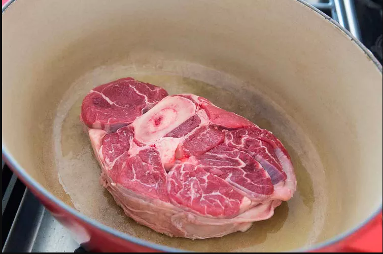
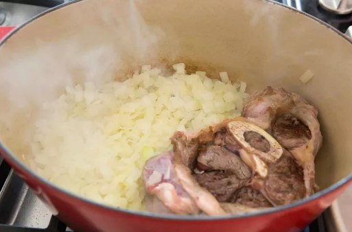
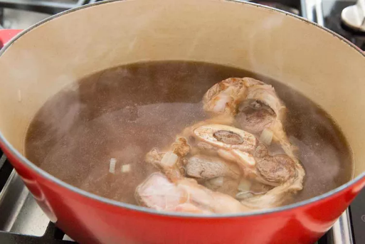
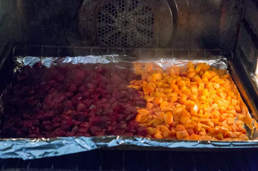
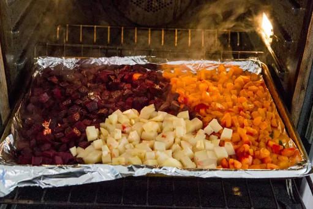
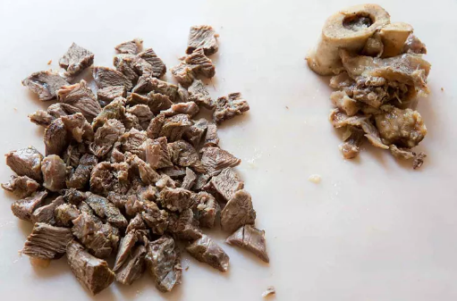
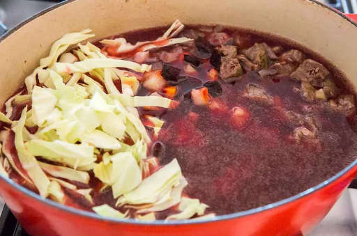
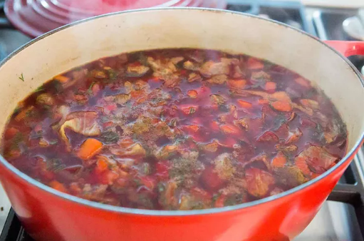

25 mins
2 hrs 30 mins
2 hrs 55 mins
6 to 8 servings
soup is best made a day ahead, giving the flavors time to meld.
Heat 2 teaspoons oil in a large, thick-bottomed pot on medium high heat. Add the shank slice or stew beef. Let the beef brown lightly on one side, then turn over.
Add the chopped onions to the pot. Let the onions cook and soften, about 5 minutes.


2. Add 4 cups broth and simmer until the beef is tender:
Pour 4 cups of the beef broth over the beef and onions in the pot. Bring to a boil. Lower the heat to a simmer. Cover and cook until the meat is falling-off-the-bone tender, about 1 hour and 30 minutes.

3. Preheat the oven to 400°F.
4. Meanwhile, prep and roast the root vegetables:
Peel and chop the beets, carrots, and potatoes into 1/2-inch pieces. Toss the beets and carrots with a teaspoon or two of olive oil and spread them out in a single layer on a foil lined roasting pan. Roast in preheated oven for 15 minutes.

Toss the potatoes with olive oil and make room for them in the roasting pan, and roast everything an additional 15 minutes.

5. Remove the meat from the pot:
Once the beef has cooked through until tender, remove from the pot, and take the pot off the heat. If you are using a beef shank, remove and discard any bone, connective tissue, and excess fat. Chop the meat into bite sized pieces.

6. Skim the soup:
Skim off any excess fat from the liquid in the pot.
7. Finish cooking the soup:
Return the pot to the stove and add the remaining broth, the carrots, beets, and potato. Add the chopped meat to the pot, the sliced cabbage, and a half cup of the fresh dill. Bring to a simmer, and cook for another 15 minutes or so, until the cabbage is cooked through.


Add the vinegar and season to taste with salt and freshly ground black pepper. (I use about 2 teaspoons of salt and 1 teaspoon of pepper, but the amount you use will depend on how salty your beef broth is to begin with.)
The soup is best made a day ahead. (The longer the soup sits, the more it will all turn the deep red color of beets.)
Serve ladled into bowls with a dollop of sour cream and a sprinkling of fresh dill.
Go back to check out more recipes